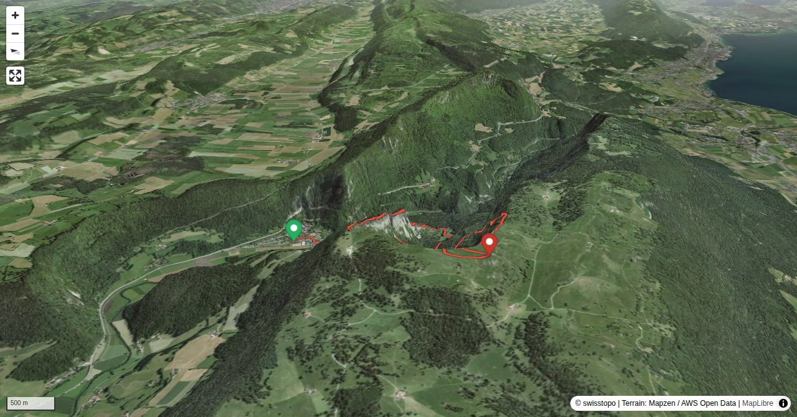

The Dos d'Âne (back of a donkey) is likely the most attractive itinerary to the popular Creux du Van: an entertaining hike with scrambling passages.
Quick Facts
| Summit elevation | 1464 m |
|---|---|
| Difficulty | SAC T4 Alpine hiking with exposure, rougher terrain, and sections that are not suitable for beginners. Guide |
| Trailhead | Noiraigue (729.8 m) On the transN-line Buttes – Fleurier – Travers – Neuchâtel |
| Distance | 8.7 km (out-and-back) |
| Total ascent | ~731 m |
| Elevation range | 725-1464 m |
| Route sources | SAC Route Portal |
Photos


Route Map & Elevation
i
i
sac_scale (precise T1–T6) with
swissTLM3D Wanderwegart
fallback where OSM is silent (coarser T2/T3 and T4+ buckets).
Coverage: OSM 61.4% · swisstopo 30.7% · unknown 6.9%.Elevations computed from the inlined GPX track (SwissTopo height API).
Loading forecast…
3D Terrain View

Route Details
On the Dos d'Âne
- Noiraigue–Ferme Robert 1 h Ferme Robert–Le Soliat 2 h Le Soliat–Ferme Robert 1 h Ferme Robert–Noiraigue ¾ h
Terrain & safety
The hike is an entertaining itinerary on a ridge and through the forest with several scrambling passages. The T4 degree is for the lower part in the steep forest (fairly difficult orientation, tiresome terrain) and the upper, rocky part (easy scrambling passages). If the terrain is dry, the whole tour does not necessarily require hiking boots. Sturdy sneakers will do.
Source: SAC Route Portal
Getting There & Back
Start: Noiraigue (729.8 m) On the transN-line Buttes – Fleurier – Travers – Neuchâtel (729 m)
Directions from to Noiraigue (729.8 m) On the transN-line Buttes – Fleurier – Travers – Neuchâtel
Route returns to Noiraigue (729.8 m) On the transN-line Buttes – Fleurier – Travers – Neuchâtel.
Field Reference
| Trailhead | Noiraigue (729.8 m) On the transN-line Buttes – Fleurier – Travers – Neuchâtel | 46.95500, 6.72200 |
|---|---|---|
| Summit | Le Soliat Creux Du Van (1464 m) | 46.92868, 6.72478 |
Coordinates are WGS84 decimal degrees (lat, lon). Emergency: 112 (general) or 1414 (Rega air rescue). Page URL: